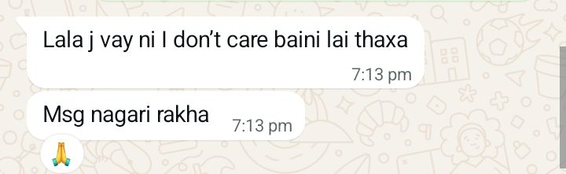
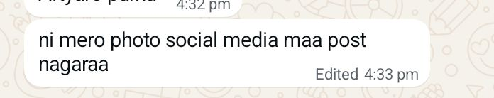

Sorry sujana जब म तिमीसँग contact मा हुन्छु म आफूले आफूलाई सम्हाल्नै सक्दिन। मलाई लाग्छ मेरो हर खुसी तिमीसँग share गरु. तिम्रो हरेक update पाइराखु । थाहा छैन कस्तो दोसाझ हो। कस्तो दोबाटो हो जुन बाटो छुट्टिएर छाडेर जानु पनि मन छैन। नगैकन पनि हुँदैन। आजबाट म अलग्गै बाटो हिँड्दैछु। तिमीलाई पिछा गर्ने दोबाटो म छाड्नेछु।
तिमीसँग बोलेको दुईवर्ष भन्दा धेरै भयो । पहिला तिम्रो विवाह भएको खबर सुन्दा धेरै नराम्रो त लागेको थियो। तापनि बिस्तारै म आफू एक्लै बाँच्न सिकिरहेको थिएँ। झुटै हाँसो हाँस्दै । तर त्यो सानो एउटा भिडियो क्लिपले मेरो जिन्दगी झन् तहस नहस बनाइदियो । यदि त्यो दिन त्यो भिडियो म भाटासम्म नआएको भए म आफ्नो मनलाई बुझाइसकेको हुने थिएँ होला । न म तिमीसँग कुरा गर्न आउँथे । न म तिमीलाई यसरी पटकपटक disturb गर्थे । मैले धेरै दुःख दिएँ। यसको लागि माफ गर।
तिमी यादमै ठिक थियौ, सुजु। टाढाबाट तिम्रो एउटा धमिलो तस्बिर मात्र देख्दा कम्तीमा यो मनलाई सम्झाउन सजिलो हुन्थ्यो—कि तिमी मेरो संसारमा छैनौ, र मैले आफ्नो बाटो एक्लै तय गर्नुपर्छ। तर तिमी आज मेरो सामु छौ। Contact मा पनि छौं। तर के गर्नु message गर्न सक्दिन । चोर जस्तरी fake ID बाट profile Stalking गर्नुपर्छ । कहिलेकाहीँ message गर्न मन लाग्यो भने पनि 1000 पटक सोच्नुपर्छ। कतिपय त म message typing गर्छु तर send bottom दबाउने डर लाग्छ। कतै तिमी रिसाउने पो हो कि । म तिमीलाई धेरै माया गर्छु। । र याद र वास्तविकतामा धेरै फरक छ। र तिमीलाई म वास्तवमा चाहँदिन तिमी मेरो यादमै ठिक छौ।
यर अर्को कुरो जब सुजता (सना) सँग break up भयो, तब नै मैले एउटा प्रतिज्ञा गरिसकेको छु—अब मेरो जीवनमा कोही पनि आउन दिदिन भनेर। किनभने म जसको हुन्छु, उसको पूर्ण रूपमा हुन चाहन्छु। र जबसम्म तिमी मेरो मनमा छौ, तबसम्म म कसैप्रति पनि पूर्ण रुपमा समर्पित हुन सक्दिन। म प्रेम निभाउन होइन, कसैसँग प्रेम गरेपछि उसमै समर्पित हुन चाहन्छु। र जबसम्म तिम्रो यादको 0.000001 प्रतिशत मभित्र हुन्छ, तबसम्म म कसैप्रति समर्पित हुन सक्दिन। जुन दिन तिम्रो याद र प्रेम पूर्णरूपमा मबाट मेटिन्छ, त्यो दिन मात्रै म कसैलाई अपनाउनेछु। र सायद यस्तो हुँदैन होला।
र अर्को कुरो जब सुजता (सना) सँग break up भयो, तब नै मैले एउटा प्रतिज्ञा गरिसकेको छु—अब मेरो जीवनमा कोही पनि आउन दिदिन भनेर। किनभने म जसको हुन्छु, उसको पूर्ण रूपमा हुन चाहन्छु। र जबसम्म तिमी मेरो मनमा छौ, तबसम्म म कसैप्रति पनि पूर्ण रुपमा समर्पित हुन सक्दिन। म प्रेम निभाउन होइन, कसैसँग प्रेम गरेपछि उसमै समर्पित हुन चाहन्छु। र जबसम्म तिम्रो यादको 0.000001 प्रतिशत मभित्र हुन्छ, तबसम्म म कसैप्रति समर्पित हुन सक्दिन। जुन दिन तिम्रो याद र प्रेम पूर्णरूपमा मबाट मेटिन्छ, त्यो दिन मात्रै म कसैलाई अपनाउनेछु। र सायद यस्तो हुँदैन होला।
तिमीले अहिले यो सुन्दा गफ हानेको वा झुटो बोलेको जस्तो लागेको होला। भेटौँ हामी अबको 41 वर्षपछि, तब मेरो उमेर ६० हुन्छ। तब नै मेरो प्रेमको अग्नि परीक्षा दिन्छु। तब पनि म एक्लै हुनेछु, त्यही म। समय बित्ला, उमेर बढ्छ, कपाल फुल्छ, आँखाको नजर कमजोर हुन्छ, तब पनि म ती आँखाले त्यही मेरो विगतको 2077 जेठको 13 गतेको नजर हेरिरहेको हुनेछु। हातहरू काप्दै हुनेछन्, त्यो हातले साथ त्यही व्यक्तिको खोजिरहेको हुनेछ। प्रेम भनेको भनेर होइन, गरेर देखाउनu भन्छन्। के तिमी वाचा गर्छौ त 41 वर्षपछि भेट्ने?
कल्पना गरौँ तिमी र म त्यही स्कुल जाने गन्तव्यमा हिँड्दैछौँ। अब हामी पहिला जस्तो दौडन सक्दैनौँ। हामीलाई त्यो प्रत्येक खुड्किला कुनै पहाड चढेको जस्तो हुनेछ। तब तिमी मलाई प्रश्न गर्नु—"कोही म जस्तो भेट्यौ त?" तब मेरो जवाफ हुनेछ:
खोज्न त खोजे तर भेटिना यो सहरमा,
कसैले फूल रोप्छ र यो बाँझो बगरमा?
कसैको अनुहारमा तिम्रो रूप खोज्दा-खोज्दै,
जिन्दगी नै बितिगयो यो सुनसान सफरमा।
जबसम्म तिमी मेरो यादमा हुनेछौ, म तिम्रो नै प्रतिक्षा गरिरहन्छु। त्यसैले त्यो कथाको नाम "प्रतिज्ञा कि प्रतिक्षा" राखेको थिएँ—मैले लिएको प्रतिज्ञा र तिमीलाई गर्ने प्रतिक्षा मिलाएर। अनि जसरी कथामा समृद्धिको प्रतिक्षा गर्दै अधिराज मरेको थियो, म पनि त्यसैगरी मर्न चाहन्छु। मलाई मृत्युसँग डर छैन, मात्र अहिले मेरो काँधमा काही अधुरा जिम्मेवारीहरू छन् जसलाई मैले पूरा गर्नुपर्नेछ। त्यति पूरा भएपछि यो दुनियाबाट एकदमै सुनसान ठाउँमा गएर बस्न मन छ—जहाँ कसैको कचकच नहोस्, कसैको suggestion नहोस्, कसैले मेरो बारे नसोधोस्। त्यस्तो जिन्दगी बिताउन मन छ, जहाँ मात्र तिम्रो यादहरू होस्।
अनि सुजु यो मेरो last Update हो । र मैले तिमीलाई सायद कसम दिएको थिएँ। App uninstall नगर भनेर आज त्यो कसमबाट पनि म तिमीलाई मुक्त गर्दछु।। अब तिमी यो application uninstall गर्न सक्छौ। र म कोसिस गर्नेछु। तिमीबाट टाढा बस्न । र म अधिराज यो कसम खाई भन्छु । भो मलाई थाहा छ मैले आफ्नो वचन पूरा गर्न ज्यान पनि दिन सक्ने व्यक्तिको रूपमा चिनिए पनि यो कुराको वचन पूरा गर्न सक्दिन। तर तिमी यति बुझ दोहोराएर पनि म तिमीलाई म्यासेज गरे भने । मेरो माया झुटो रहेछ। सायद यो वचनले मलाई message गर्नबाट आफूले आफूलाई रोक्छ होला। अरुको कसम खाँदिन। तर यदि दोहोर्याएर पनि म तिमीलाई message गर्छु भने मेरो माया सबै झुटो होस् ।
अब तेस्रो कुरो । म तिम्रो फोटोहरू पनि सबै मेरो gallery बाट delete गर्दिन्छु। भिडियो सेक्सनको तल भएको रातो बटममा click गरेर एउटा भिडियो हेर्न नछुटाउ । तिम्रै याद आउँदा हेर्न मसँग एउटा धुलाइएको फोटो छ। जुन फोटो सायद मैले कथामा पनि बयान छ। त्यही एउटा फोटो म र चुरोट भए मेरो दिन मजाले बित्छ। तिम्रो फोटो र भिडियोहरू पनि अब social media राख्दिन

म खुसी नै छु। तिम्रो खुसी हेरेर । तिमी कदापि दुःखी नहुनु । र यदि तिमीलाई कसैले दुःख दिन्छ भने मलाई भन्नu म सारा दुनिया जलाइदिन्छु। तिम्रो एक शब्दको आज्ञाले म अरुको त के आफ्नै शिर पनि काटी तिम्रो पाउमा अर्पण गर्दिन्छु।
म भन्न नै सक्दिन कि । म कसरी भनु कति माया गर्छु भनेर । भन्छन् जब जुनसुकै कुराको नि धेरै मात्रा हुन्छ त्यसले आफैलाई असर गर्छ। प्रेम पनि त्यस्तै रहेछ।। सायद मलाई त प्रेमी पनि होइन भक्त भन्न सुहाउँछ। किनभने म मनबाट भन्दैछु। आफ्नै कसम खाएर म तिमीलाई मेरो आफ्नो बनाउन चाहन्न। म त बस तिमीलाई खुसी हेर्न चाहन्छु। र सधैँ तिमीलाई नै चाहन्छु ।
अनि अर्को कुरा आफ्नो बनाउने भनेको के हो । यस समाजको शब्दमा विवाह । अनि विवाह के हो । एउटा सम्झौता जीवनभरि साथ दिन्छु भन्ने बाचा । र सधैँ तिम्रो खुसी र तिम्रो सुख दुःखमा साथ दिन्छु भन्ने वाचा । मैले त्यो त तिम्रो यादहरूसँग गरिदिए । Directly भन्नुपर्दा त्यो सबै बाचा कसम मैले तिम्रा यादहरुलाई गरिसकेँ। अब तिम्रो याद नै मेरो जीवन साथी हो ।
विदाई र बाचायो शब्दहरू लेख्दै गर्दा मुटु च्यातिएर आउँछ, मेरो आँखा सबै रसाएको छ। हात यसरी थरथरी काम्दैछ, जस्तो कि जिन्दगीमा पहिला brown sugar छाड्दा भएको थियो। मेरा ओठहरू पूर्ण रूपमा सुक्का भएका छन्। आँखामा आँसुले पुरै ढाकेर typing पनि राम्रो देखिरहेको छैन। यति धेरै असहाय र दुःखी म यो जिन्दगीमा जम्मा दुईपटक मात्र भएँ—पहिला मेरो भाइ suicide गर्दा अनि आज यो पीडादायी घडीमा। हुन त मैले जीवनमा धेरैपटक Good Bye भन्दै फेरि फर्किएर आएको छु, तर अब चाहिँ बस, पुग्यो। मुटुमाथिको यो पत्थर बोकेर भन्दैछु, माथि पढेको भए मैले तिमीलाई गर्ने मायाको कसम खाएर भन्छु, अब म कहिल्यै आउँदिन।
अझै पनि यदि तिमीले यहाँसम्म यो पत्र पढेको भए, यो मेरो पक्का बाचा भयो—म तिम्रो ६०औँ जन्मदिनमा टाढैबाट तिमीलाई हेर्न आउनेछु, यदि म यो धर्तीमा बाँचे भने। र मलाई भित्री मनदेखि किन-किन लाग्छ मेरो आयु जम्मा ६६ वर्ष मात्र छ। मैले जिन्दगीमा देखेका धेरै सपनाहरू पूरा भइसकेका छन्। अनि मैले यो कुरा पनि धेरै पहिला सपनामै देखेको थिएँ, जसको कारणले गर्दा नै मलाई 'प्रतिज्ञा कि प्रतीक्षा' भन्ने कथा लेख्ने विचार मेरो दिमागमा आएको थियो। यदि तिमीले त्यो कथा पढेको भए, त्यसमा जस्तो scene छ, जस्तो घटना छ, त्यो ट्याक्कै मैले सपनामा देखेर नै लेखेको हुँ। म गहिरो आशा गर्छु मेरो यो अन्तिम सपना पनि अवश्य पूरा हुनेछ।